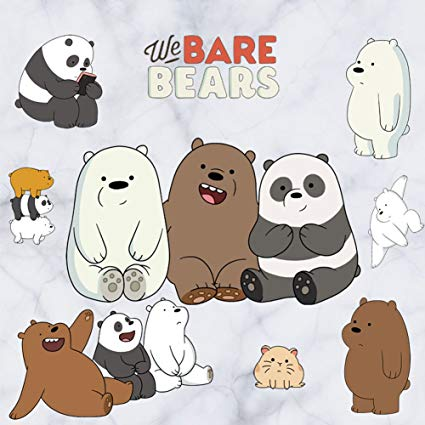
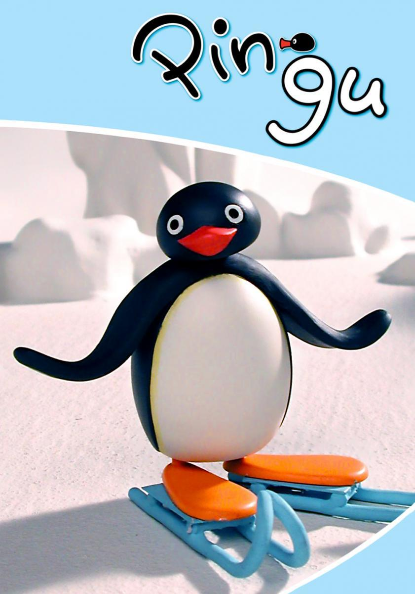

Summary:
We Bare Bears follows three adoptive bear brothers: Grizzly, Panda and Ice Bear. The bears attempt to integrate with human society, such as by purchasing food, making human companions or trying to become famous on the Internet, although these attempts see the bears struggle to do so due to the civilized nature of humans and their own animal instincts. However, in the end, they figure out that they have each other for support. One notable aspect of the show's humor is the bears' ability to form a "bear stack". As its name shows, the bears stack on top of each other, which serves as their unique way of transportation. Occasionally, the bears share adventures with their friends, such as child prodigy Chloe Park, bigfoot Charlie, internet sensation Nom Nom, park ranger Tabes, and produce saleswoman Lucy. Some flashback episodes chronicle the adventures of the bears as cubs trying to find a home.

Summary:
Who is Pingu? He's a charming and cheeky young penguin who lives in the snow and ice of the South Pole. Often finding himself in tricky and comical situations, the mischievous penguin meets the challenges of life head on, as he grows into a cooler and wiser penguin along the way. The award-winning, stop-frame calymation show appeals to millions of fans worldwide. Pingu has fun chillin' with his family and friends at their Arctic home, but that's just the tip of the iceberg when it comes to the cool adventures of this humorous penguin. Penguins have feelings too, and Pingu experiences the joys and frustrations of kids everywhere in these fun-filled stories. But sometimes things get out of hand as the mischievous little penguin goes from one "ice-capade" to another!